2026 Towards Learning Boulder Excavation with Hydraulic Excavators_요약
Towards Learning Boulder Excavation with Hydraulic Excavators
[!abstract] 한 문장 요약 12톤 유압 굴착기가 표준 버킷, 암 상태 피드백, 암석당 20개 LiDAR 점만으로 불규칙 암석을 정렬·퍼담기·인양하도록 강화학습한 결과, 현장 40회 시험에서 70% 성공률을 달성했다(숙련도 약 300시간인 인간 운전자: 83%).
1. 연구의 핵심
| 질문 | 답변 |
|---|---|
| 무엇을 자동화했나? | 툴 교체 없이 표준 굴착 버킷으로 0.4–0.7 m 크기의 암석을 제거하는 작업 |
| 왜 어려운가? | 불규칙 형상, 암석–토양 결합, 토양 저항 변화, 야외 조명·진흙·가림, 유압 지연이 동시에 존재하기 때문 |
| 핵심 방법은? | Isaac Lab 강체 시뮬레이션 + 준정적 2D 토양 저항 모델 + 희소 점군/고유감각 기반 PPO 정책 |
| 가장 중요한 결과는? | 시뮬레이션 평균 94%(기존 Digging RL 33%), 실제 장비 70%(인간 83%) |
| 가장 큰 병목은? | 버킷/암에 의한 가림으로 작은 암석 추적이 끊기는 문제와 시뮬레이션에 없는 실제 토양 동역학 |
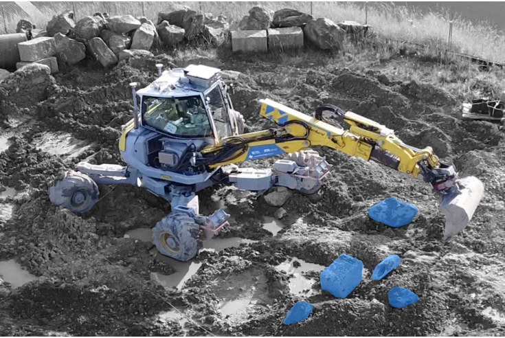
그림 1. 제거 대상 암석을 파란색으로 표시한 실제 굴착 환경. 논문 Fig. 1에서 추출.
2. 문제 설정과 기여
기존 자동 굴착은 주로 토사·자갈 같은 연속 매질을 다루거나, 개별 암석에 대해서는 정밀 3D 모델과 전용 그리퍼를 전제로 한다. 그러나 현장에서는 그리퍼로 교체하는 시간이 작업 흐름을 끊고, 이후 굴착에는 다시 버킷이 필요하다. 이 논문은 다음 세 요소를 동시에 다룬다.
- 표준 버킷 기반 개별 물체 조작: 암석을 먼저 정렬하고, 버킷 안으로 퍼담은 뒤, 말아 올리며 들어 올린다.
- 희소 지각: SAM2로 RGB 영상에서 목표 암석을 분할한 뒤 LiDAR 점을 마스킹하고, 그중 20개 점만 정책에 입력한다.
- 토양 적응형 제어: 토양 종류를 직접 추정하지 않고도, 관절 토크와 운동 상태를 이용해 단단한 토양에서는 표면을 길게 끌고 부드러운 토양에서는 직접 관입하는 전략을 학습한다.
[!important] 저자들의 기여 주장 저자들은 이 연구를 표준 굴착 버킷과 희소 3D 지각을 사용해 산업 규모 건설 장비에서 암석 조작을 현장 검증한 첫 사례로 제시한다.
3. 전체 시스템
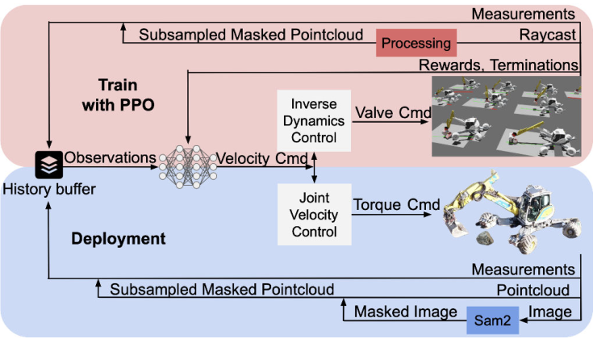
그림 2. 학습과 실제 배치를 연결하는 전체 구조. 논문 Fig. 2에서 추출.
flowchart LR
A[RGB 영상<br>사용자 5점 초기화] --> B[SAM2<br>목표 암석 추적]
C[Ouster LiDAR<br>점군] --> D[분할 마스크로<br>점군 필터링]
B --> D
D --> E[암석 표면<br>20개 3D 점]
F[관절 위치·속도·토크<br>버킷 자세·이전 행동] --> G[PPO 정책<br>지연 이력 포함]
E --> G
G --> H[5개 관절<br>속도 명령]
H --> I[PID + 밸브 유량 제어<br>12톤 M545]
I --> F
style A fill:#dbeafe,stroke:#2563eb,color:#172554
style B fill:#ede9fe,stroke:#7c3aed,color:#2e1065
style G fill:#fef3c7,stroke:#d97706,color:#451a03
style I fill:#dcfce7,stroke:#16a34a,color:#052e16
하드웨어와 실행 주기
- 플랫폼: Menzi Muck M545, 12톤 유압 워킹 굴착기
- 센서: Ouster OS1 Rev 6 LiDAR, ZED 2i 스테레오 카메라, 관절 IMU/변위 센서, 유압 압력 기반 토크 추정
- 분할: 사용자가 목표 암석에 약 5개 픽셀을 지정해 SAM2 추적을 초기화
- 추론: NVIDIA RTX 4080에서 약 95 ms
- 정책 제어 주기: 6 Hz
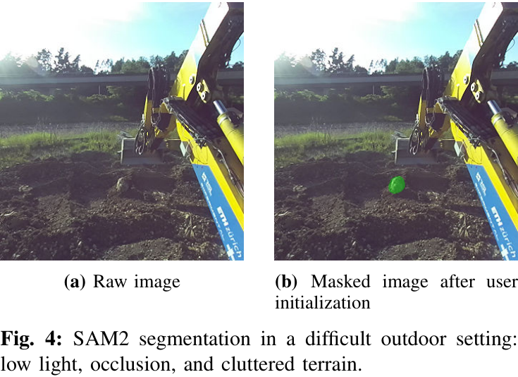
그림 3. 저조도·가림·복잡한 지면에서도 동작하는 SAM2 분할 예. 논문 Fig. 4에서 추출.
4. 시뮬레이션과 강화학습
4.1 굴착기·암석·토양 모델
- 굴착기: 베이스 회전, 붐, 스틱, 텔레스코픽 연장, 버킷 피치의 5개 관절만 작동시킨다.
- 암석: 실제 암석을 3D 스캔한 50개 형상을 사용한다. 밀도는 2,500 kg/m³, 질량은 에피소드마다 ±10%, 주축 크기는 각각 0.3–1.0 m, 0.1–0.5 m, 0.2–0.7 m로 무작위화한다.
- 접촉: 암석–토양 마찰계수는 0.35–0.6, 굴착기 지지면 마찰계수는 0.8이다.
- 토양: Reece의 Fundamental Equation of Earth-Moving에 기반한 준정적 2D 저항 모델을 적용한다. 입자 기반 모델보다 단순하지만, 수천 개 병렬 환경에서 RL을 학습할 수 있다는 계산상 이점이 있다.
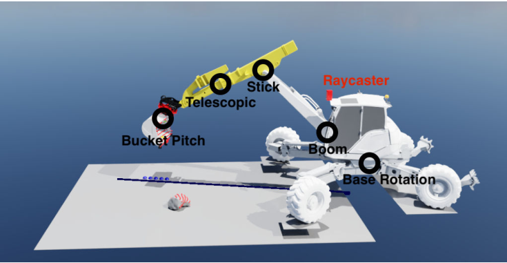
그림 4. Isaac Lab 환경, LiDAR 레이캐스트와 암 방향에 정렬된 2D 토양면. 논문 Fig. 3에서 추출.
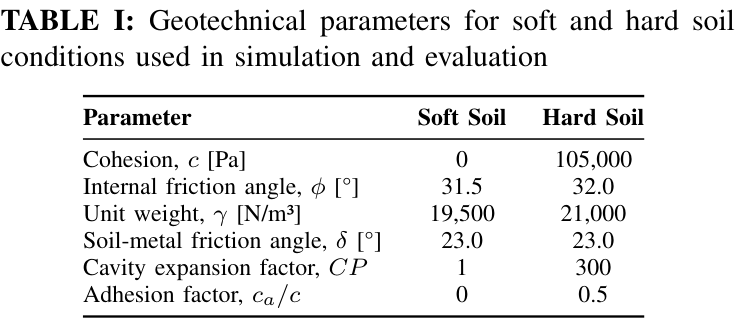
표 1. 연질·경질 토양 조건의 지반공학 파라미터. 논문 Table I에서 추출.
4.2 관측과 행동
정책 상태에는 관절 위치·속도·토크, 회전 관절 이력, 버킷 자세와 속도, 목표 암석의 20개 3D 점, 이전 행동이 포함된다. 모든 입력은 $[-1,1]$로 정규화된다. 정책의 출력은 다섯 관절의 속도 명령이다.
$$ \mathbf{a}t = [\dot q{\mathrm{turn}},\dot q_{\mathrm{boom}},\dot q_{\mathrm{stick}},\dot q_{\mathrm{tele}},\dot q_{\mathrm{pitch}}]^\top \tag{1} $$
정렬이 끝난 뒤 회전축을 멈춰 작업을 수직 평면에 가깝게 제한하도록 다음 데드밴드를 사용한다.
$$ \dot q_{\mathrm{turn}}= \begin{cases} 0, & |\dot q_{\mathrm{turn}}| < \epsilon_{\mathrm{turn}} \ \dot q_{\mathrm{turn}}, & \text{otherwise} \end{cases} \tag{2} $$
실제 유압계의 지연을 모사하기 위해 에피소드마다 제어 지연 $\tau_{\mathrm{delay}}\in[0,1.2]$ s를 샘플링하며, 이력 길이 $L$은 $L\Delta t_{\mathrm{control}}\ge\max(\tau_{\mathrm{delay}})$가 되도록 정한다.
4.3 보상·종료·학습 설정
보상은 횡방향 정렬, 버킷 접근, 암석 아래 진입, 버킷 내부 포획, 컬링, 목표 높이 인양, 최종 성공을 순차적으로 유도한다. 반대로 급격한 행동, 과도한 버킷 속도, 불필요한 회전, 토양 내부 회전, 얕고 정렬되지 않은 퍼담기, 최종 실패를 벌점으로 둔다.
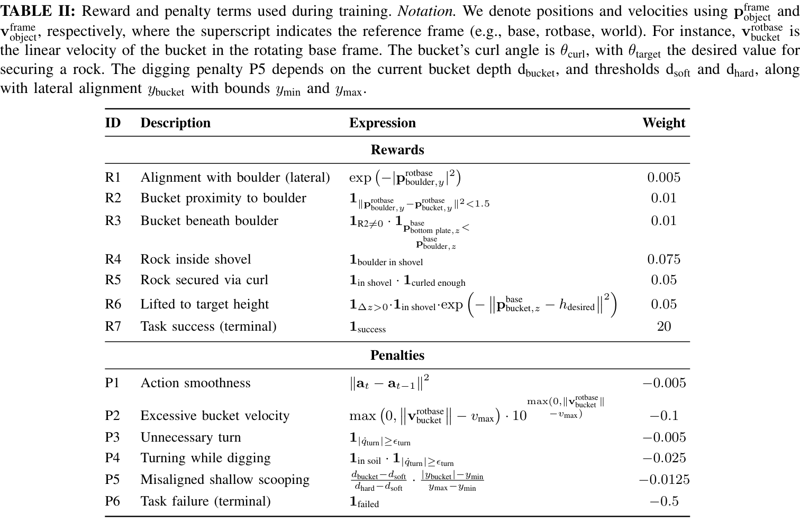
표 2. R1–R7 보상과 P1–P6 벌점. 논문 Table II에서 추출.
성공은 암석이 버킷 안에 있고, 컬 각도가 0.5 rad보다 크며, 기준 높이 0.5 m보다 높게 들렸을 때로 정의한다. 제한시간은 29 s이며, 베이스 속도 0.1 m/s 초과, 버킷 속도 1.2 m/s 초과, 관절 속도 제한 위반, 암석 낙하, 잘못된 받음각도 종료 조건이다.
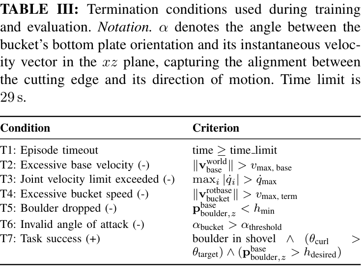
표 3. T1–T7 종료 조건. 논문 Table III에서 추출.
PPO/GAE 정책은 256유닛 은닉층 2개와 leaky ReLU를 사용한다. 학습률은 $10^{-4}$, PPO clip은 0.2, value loss 계수는 0.5, entropy 계수는 0.005이며, 9,000회 반복(환경당 업데이트마다 24 step)으로 약 8년 분량의 시뮬레이션 경험을 축적한다.
4.4 5단계 커리큘럼
현재 단계의 최근 1,000 에피소드 성공률이 80%를 넘으면 다음 단계로 이동한다.
flowchart LR
L0[Level 0<br>연질 토양·암석이 버킷 앞<br>인양부터 학습] --> L1[Level 1<br>받음각 종료조건 활성화<br>올바른 퍼담기]
L1 --> L2[Level 2<br>토양 물성 무작위화<br>저항 적응]
L2 --> L3[Level 3<br>4.5×3×0.4 m 초기영역<br>정렬 학습]
L3 --> L4[Level 4<br>오정렬 벌점<br>깊이 인지 퍼담기]
style L0 fill:#e0f2fe,stroke:#0284c7,color:#0c4a6e
style L1 fill:#dbeafe,stroke:#2563eb,color:#172554
style L2 fill:#ede9fe,stroke:#7c3aed,color:#2e1065
style L3 fill:#fef3c7,stroke:#d97706,color:#451a03
style L4 fill:#dcfce7,stroke:#16a34a,color:#052e16
5. 실험 결과
5.1 시뮬레이션
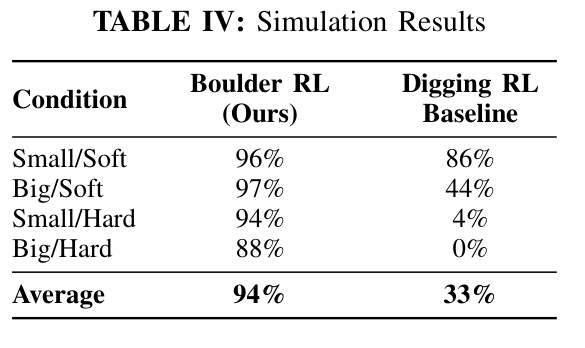
표 4. 시뮬레이션 조건별 성공률. 논문 Table IV에서 추출.
- 제안 방법 평균: 94%
- 연속 토사 굴착용 Digging RL 기준선 평균: 33%
- 가장 어려운 대형 암석/경질 토양에서도 제안 방법은 88%, 기준선은 0%
- 경질 토양의 미학습 25개 대형 암석 형상에서 87%, 학습 형상에서 88%로 형상 일반화 성능이 거의 유지됨
이 비교는 “토사를 많이 담는 궤적”만으로는 개별 암석을 안정적으로 포획할 수 없고, 암석 자세에 반응해 정렬과 깊이를 계속 수정하는 물체 조작 정책이 필요함을 보여준다.
5.2 실제 굴착기
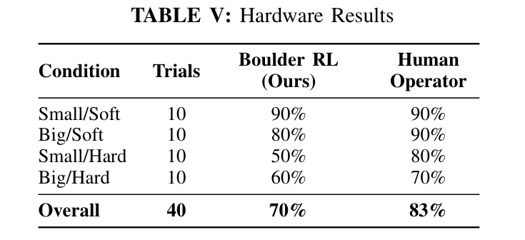
표 5. 실제 장비 40회 시험 결과. 논문 Table V에서 추출.
| 조건 | 제안 방법 | 인간 운전자 | 차이 |
|---|---|---|---|
| 소형/연질 | 90% | 90% | 0%p |
| 대형/연질 | 80% | 90% | -10%p |
| 소형/경질 | 50% | 80% | -30%p |
| 대형/경질 | 60% | 70% | -10%p |
| 전체 | 70% | 83% | -13%p |
가장 큰 차이는 소형/경질 토양(-30%p)에서 나타났다. 작은 암석은 버킷 뒤로 완전히 가려지기 쉽고, 인간은 공간 기억과 지면 변형을 이용해 계속 조작하지만 현재 시스템은 추적이 끊기면 복구하기 어렵다.
5.3 학습된 토양 적응 행동
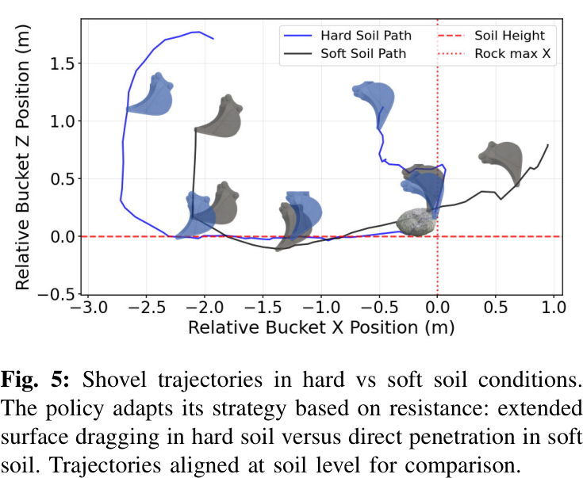
그림 5. 경질 토양에서는 표면을 길게 끌고, 연질 토양에서는 직접 관입하는 궤적. 논문 Fig. 5에서 추출.
경질 토양에서 버킷의 수평 이동은 연질 토양보다 약 40% 길다. 연구진은 이를 명시적인 토양 분류기의 결과가 아니라, 초기 관입 시 토크가 커질 때 정책이 저항을 피해 표면 드래깅으로 전환한 창발적 행동으로 해석한다.
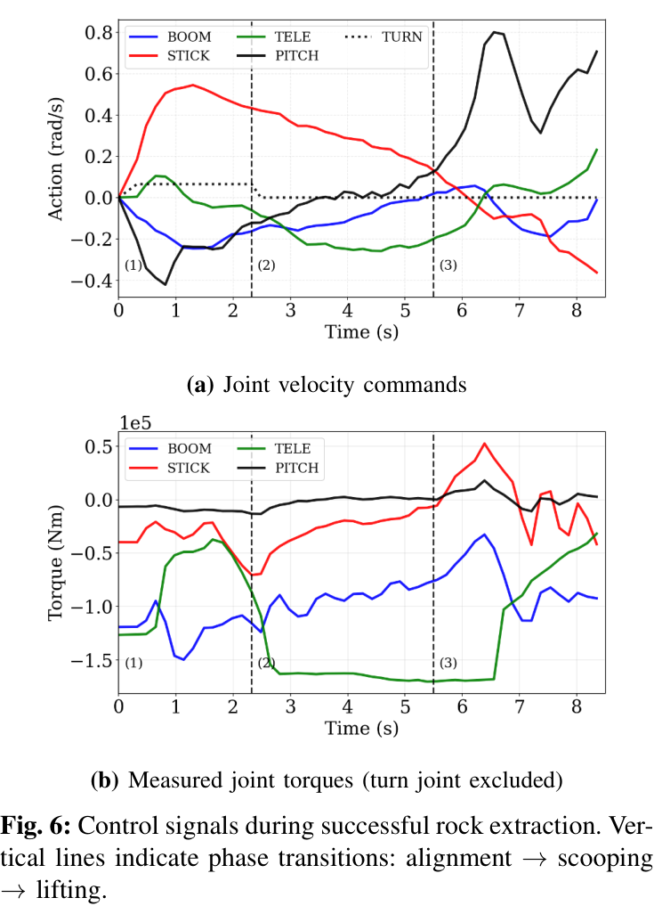
그림 6. 성공 작업의 관절 속도 명령과 토크. 점선은 정렬→퍼담기→인양 전환을 나타낸다. 논문 Fig. 6에서 추출.
flowchart LR
A[정렬<br>회전축으로 암석을 정면 배치] --> B[퍼담기<br>붐·스틱·버킷 협조]
B --> C[인양<br>버킷 컬링으로 암석 고정]
D{초기 관입 저항} -->|큼·경질 토양| E[표면 드래깅<br>수평 경로 약 40% 증가]
D -->|작음·연질 토양| F[직접 관입<br>짧은 퍼담기 경로]
E --> B
F --> B
style A fill:#dbeafe,stroke:#2563eb,color:#172554
style B fill:#fef3c7,stroke:#d97706,color:#451a03
style C fill:#dcfce7,stroke:#16a34a,color:#052e16
style D fill:#fce7f3,stroke:#db2777,color:#500724
6. 실패 모드와 한계
- 지각과 가림: 고정된 캐빈 센서는 근접 조작 시 암과 버킷에 의해 시야가 가려진다. 작은 암석의 완전 추적 손실이 실패의 주된 원인이다.
- 부분 매립 암석: LiDAR는 보이는 표면만 취득하므로 실제 크기와 매립 깊이를 충분히 표현하지 못한다.
- 미모델링 토양 동역학: 실제 암석–토양 결합, 지면 높이 변화, 버킷 내부 토사 축적과 넘침은 준정적 2D 모델에 충분히 반영되지 않는다.
- 회전 제어 오차: 거친 회전 동역학 모델 때문에 큰 암석과의 정렬이 어긋나 버킷 측면에 끼는 경우가 있다.
- 실험 범위: 실제 시험은 총 40회, 0.4 m와 0.7 m 두 크기, 연질/경질 두 조건에 한정된다. 더 다양한 지질·경사·다중 암석 환경에서의 재현성은 아직 입증되지 않았다.
- 사람 개입: 목표 암석 분할은 사용자의 약 5개 픽셀 지정으로 시작하므로 완전 무인 작업은 아니다.
고충실도 입자 기반 토양 시뮬레이션은 일부 격차를 줄일 수 있지만, 저자들은 대규모 병렬 RL에 필요한 계산비용이 현재는 지나치게 크다고 지적한다. 향후 과제로는 가림을 견디는 시간 모델과 현장 정리에 필요한 다중 암석 시나리오가 제시된다.
7. 해석과 시사점
[!note] 논문에서 직접 뒷받침되는 해석 이 연구의 성과는 70%라는 숫자만이 아니라, 매우 단순화된 토양 모델과 암석당 20개 점이라는 작은 입력으로도 작업에 필요한 반응 행동을 학습할 수 있음을 실제 대형 장비에서 보였다는 점이다. 시뮬레이션과 실제 사이의 24%p 격차(94%→70%)는 주로 정책 자체보다 가림과 미모델링 환경 상호작용에서 발생한다.
[!opinion] 나의 의견 자율 굴착 시스템을 설계할 때 다음 성능 개선의 우선순위는 정책 네트워크를 키우는 것보다 관측의 시간적 지속성을 확보하는 데 두는 편이 타당해 보인다. 예를 들어 암석 상태 추정기에 가림 중 예측·불확실도·재탐색 동작을 포함하고, 버킷 토사 축적이나 지면 변화까지 상태에 반영하면 소형/경질 조건의 30%p 격차를 직접 겨냥할 수 있다. 또한 작업 성공률뿐 아니라 작업시간, 에너지, 버킷/암석 충격, 재시도 횟수를 함께 최적화해야 실제 토공 공정에서 인간 운전자와 공정 수준으로 비교할 수 있다. 이는 논문의 결과를 바탕으로 한 개인적 연구 제안이며, 논문에서 검증된 결론은 아니다.
8. 결론
이 논문은 전용 그리퍼나 조밀한 3D 복원 없이도, 표준 버킷과 희소 LiDAR·고유감각을 사용하는 강화학습 정책이 실제 12톤 굴착기에서 불규칙 암석을 제거할 수 있음을 보였다. 시뮬레이션 성능은 높고 미학습 형상 일반화도 강했지만, 실제 성공률을 제한한 핵심은 작은 암석의 가림과 실제 토양 상호작용이었다. 따라서 후속 연구의 중심은 더 복잡한 정책보다 시간적 지각, 불확실성 기반 복구, 다중 암석 및 변화하는 지형 모델링이 되어야 한다.
서지정보
- 논문명: Towards Learning Boulder Excavation with Hydraulic Excavators
- 저자: Jonas Gruetter, Lorenzo Terenzi, Pascal Egli, Marco Hutter
- 학회: IEEE International Conference on Robotics and Automation (ICRA 2026), Vienna, Austria
- 키워드: Construction Robotics, Field Robotics, Reinforcement Learning
- 원문: 2026 Towards Learning Boulder Excavation with Hydraulic Excavators